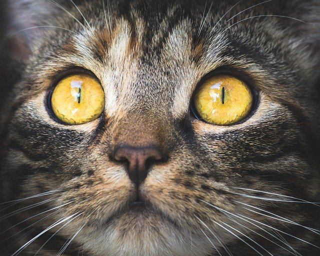

|
O gato comum europeu também é designado por europeu, celta de pelo curto ou simplesmente pela sigla GCE. Pensa-se que esta raça descende do gato selvagem africano, oriundo do norte de África. Tal é justificado pelas semelhanças anatómicas entre as duas raças. O gato comum europeu é ainda hoje equiparado ao gato doméstico comum, o que é errado. O gato comum europeu é uma raça independente: tem os seus próprios padrões de raça e pedigree. Por outro lado, a classificação de gato doméstico é sistemática e este termo engloba uma série de raças. |
Os olhos são as janelas da alma, e isso é ainda mais evidente nos olhos de um gato. Quem nunca se viu hipnotizado pelos lindos olhos dos nossos amigos felinos? Com seus azuis e verdes impossíveis, ou tons de ouro e âmbar líquido, não tem como não nos perdermos nas profundezas desse olhar. Mas mais do que lindos, os olhos dos gatos têm uma função muito importante na sua sobrevivência, e nos ensinam várias coisas sobre o estado de espírito e a saúde dos nossos peludos. É só sabermos olhar. |
 |